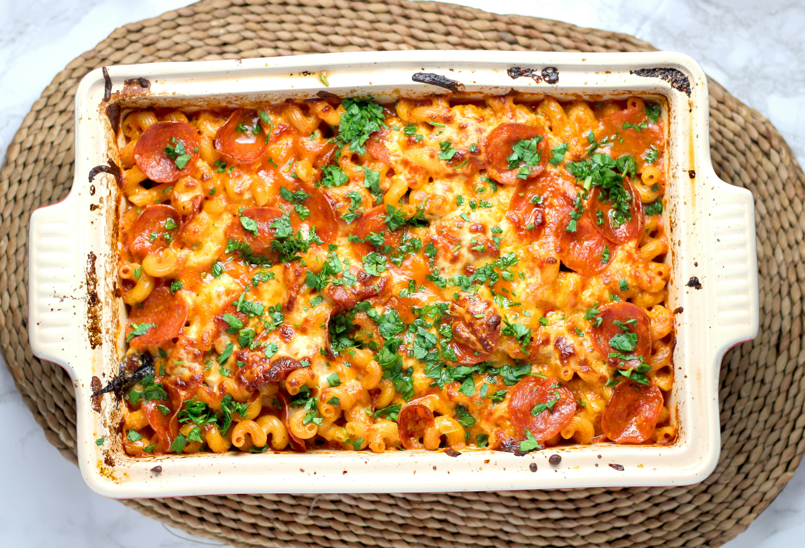

Lasagna Recipe

Recipe to make a classic Italian lasagna.
Ingredients:
- 1 lb ground beef
- 1 onion, chopped
- 2 cloves garlic, minced
- 1 can (28 oz) crushed tomatoes
- 2 tbsp tomato paste
- 1 tsp dried basil
- 1 tsp dried oregano
- Salt and pepper to taste
- 12 lasagna noodles
- 15 oz ricotta cheese
- 2 cups shredded mozzarella cheese
- 1/2 cup grated Parmesan cheese
Steps:
- Preheat oven to 375°F (190°C).
- In a large skillet, cook ground beef, onion, and garlic over medium heat until meat is browned. Drain excess fat.
- Add crushed tomatoes, tomato paste, basil, oregano, salt, and pepper. Simmer for 20 minutes.
- Cook lasagna noodles according to package instructions. Drain and set aside.
- In a 9x13 inch baking dish, spread a layer of meat sauce, followed by a layer of noodles, then a layer of ricotta cheese. Repeat layers until all ingredients are used, ending with a layer of meat sauce.
- Top with shredded mozzarella and grated Parmesan cheese.
- Cover with aluminum foil and bake for 25 minutes. Remove foil and bake for an additional 25 minutes, or until cheese is bubbly and golden brown.
- Let lasagna cool for 10 minutes before serving. Enjoy!
Home